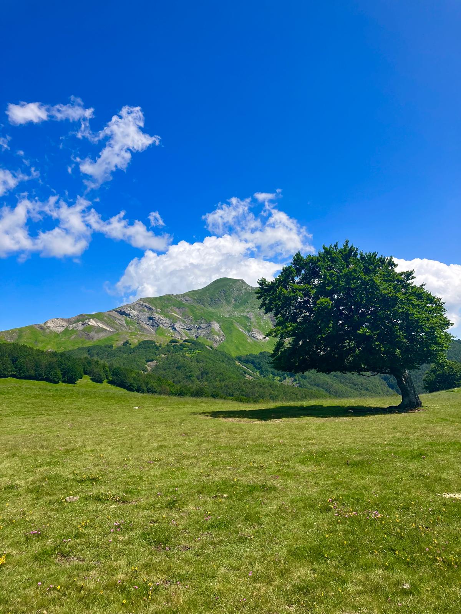
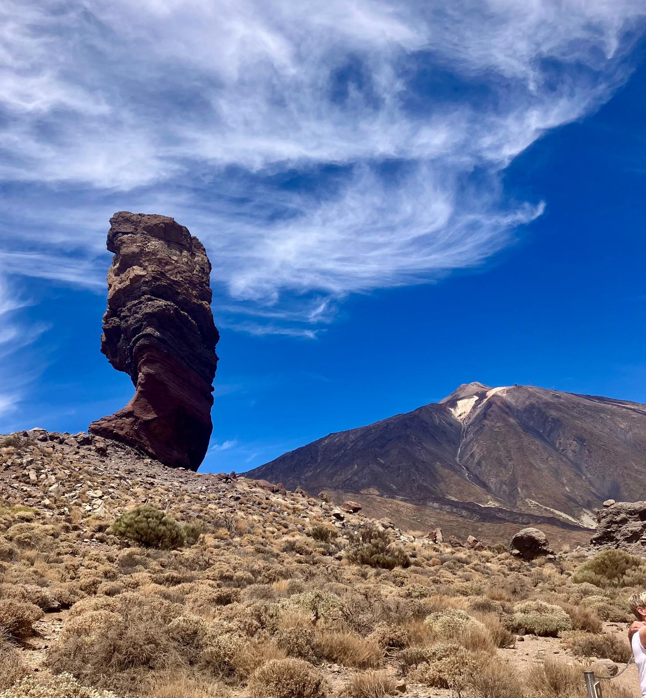
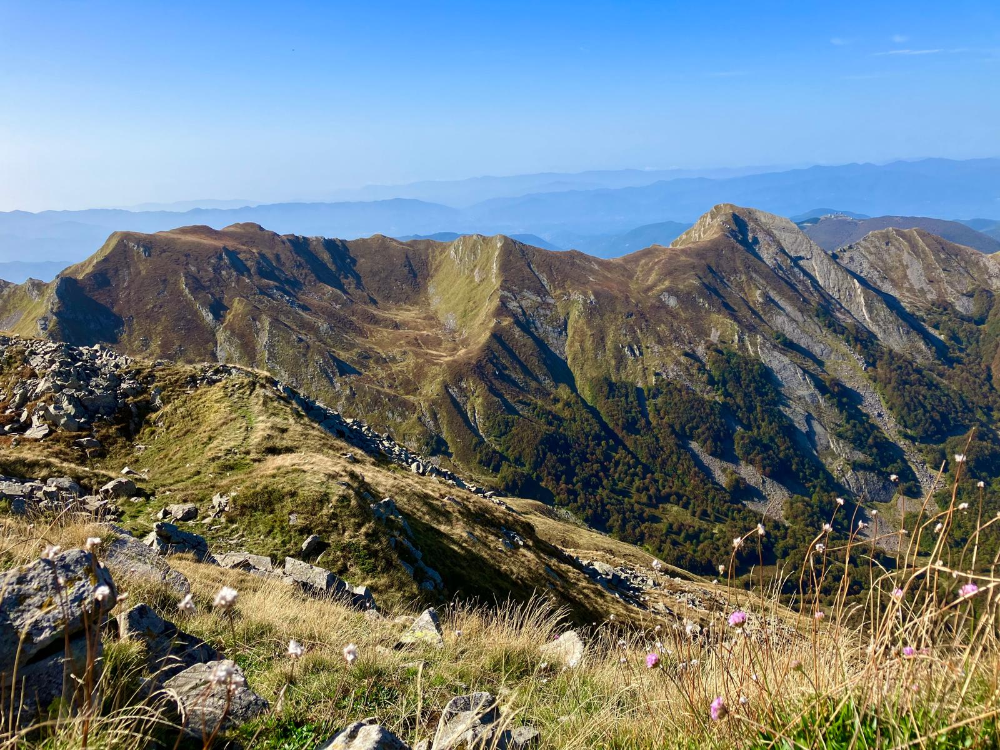
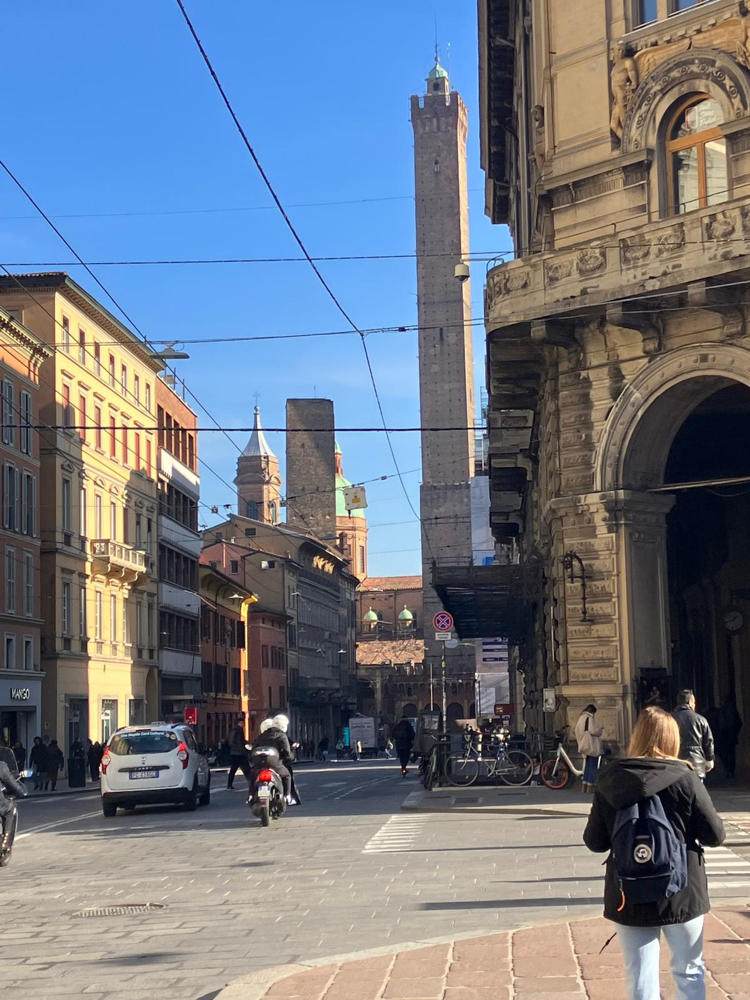
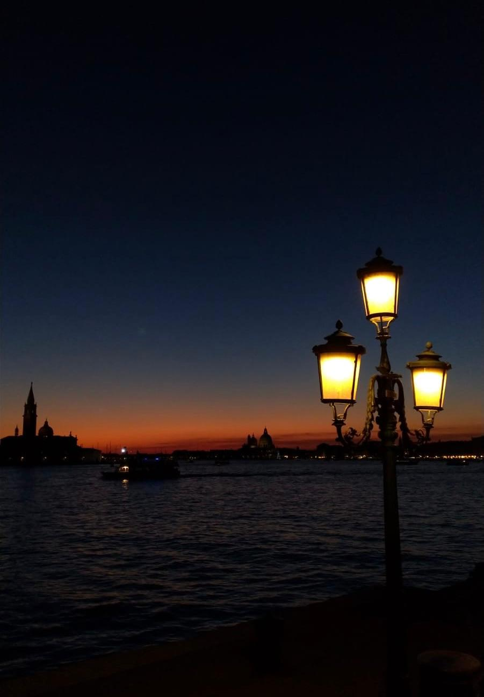
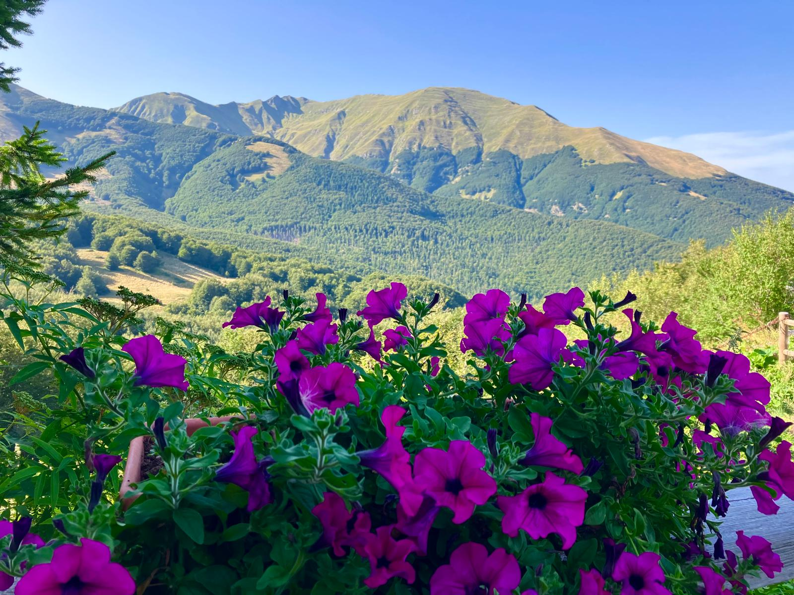

Simone Baricca
Home
Research
CV
Gallery
Contact
Gallery
Some moments from my personal life.

Monte Cusna dai prati di Sara.

Pico Del Teide, 16 settembre 2024.

Alpe di Succiso — Appennino Tosco-Emiliano.

Panorama di Bologna e le Due Torri.

Venezia, 2019.

Monte Casarola— Appennino Tosco-Emiliano.